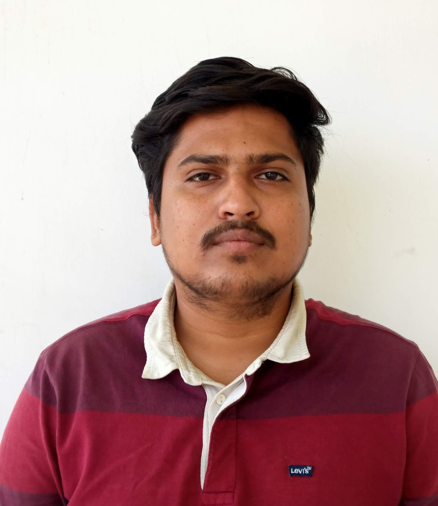

Diganta Pan

Summary
I am a Btech Computer Engineering, graduated in 2025, actively seeking a Software Developer role to
contribute to innovative projects and grow within a dynamic organization. I have keen interest in Python , AI
and ML, Full Stack Development and Data Science. I am extremely passionate about using technology to build
innovative solutions for real-world problems. With hands-on projects and internships, I look forward to bringing
my theoretical knowledge into practical experience, dedicating myself to continuous learning and innovation in
the tech field.
EDUCATION
Indus University Ahemdabad
Btech Computer Engineering
Grades: 8.61/10
Work Experience
Web Developer Intern - Abtik Services LLP
Web Developer Intern at Prodigy
Skills
- Technical Skills: Python, IOT, AI tools and prompt engineering, Web Development, Data Science.
- Technical Stack: Python, C++, JS, HTML, CSS. Currently Exploring : MERN Stack.
- Soft Skills: Communication skills, Leadership and managerial skill.
- Languages : English, Hindi, Gujarati, Bengali
Others